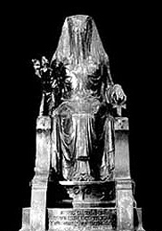

|
|
|  |
| Statua velata di Iside |
|
|
|
|
| |
Su quella che dovrebbe essere la tomba di Iside, vicino a Menfi, era stata eretta una statua ricoperta di un velo nero. Sulla base della statua era stata incisa questa iscrizione: "Io sono tutto ciò che fu [QUID FUIT], ciò che è [QUID EST], ciò che sarà [QUID ERIT] e nessun mortale ha ancora osato sollevare il mio velo. »
Sotto questo velo si nascondono tutti i misteri e il sapere del passato… La rimozione del velo di Iside rappresenta la rivelazione della luce e il riuscire nel sollevare questo velo equivale al divenire immortale.
|
| |
| Poiché il cammino era seguito volontariamente e riguardava esclusivamente l'individuo, la religione egiziana non ebbe mai uno spirito missionario. Era tollerante verso il mondo e benevolente con i suoi bambini. L'Egitto non volle mai cercare altrove la propria coscienza del mondo, se non nei suoi templi. Non desiderò mai imporli agli altri, e questo è il motivo per cui accolse con reticenza quegli studiosi greci ai quali rimprovera la loro ignoranza e i loro vaniloqui. I loro nomi erano Omero, Solone, Pitagora, Democrito, Eudosso, Erodoto, Giamblico, Platone, Plutarco e Talete. |
| |
| Tuttavia, per un paradosso il cui segreto è conservato dalla storia, furono proprio i greci a celebrare dappertutto il nome dell'Egitto, diffondendo in tutta l'Europa il culto di Iside ed Osiride. Furono loro a rivelare alcuni aspetti della saggezza degli antichi sacerdoti. Rispettosi, celarono quello che avevano appreso della Conoscenza nascosta nei santuari. Abili nell'arte della parola, lasciarono che il velo di Iside ricoprisse i segreti iniziatici dei quali divennero gli eredi. |
| |
| In questo inizio del terzo millennio, Conoscenza e Luce sembrano essere ricoperti dalle tenebre; miti e divinità sono scomparsi dal nostro cospetto. Nessun Omero canta più l'apparizione degli dei, nessun faraone accoglie più il sole. Pertanto, quando scende la notte sulle coscienze, gli occhi si rivolgono all'Egitto. È sempre in questo specchio che brillano le Luci celesti, basta guardare ed aprire la propria coscienza, come affermava Guillaume Apollinaire: "è arrivato il tempo di riaccendere le stelle". |
| |
"Ignori, tu, o Asclepio, che l'Egitto è l'immagine del cielo […] il muoversi e il calarsi di tutte le cose che sono mosse secondo ordine nel cielo? E se si deve parlare con maggiore esattezza, il nostro paese è il tempio di tutto il mondo."
Ermete Trismegisto, Corpus Hermeticum II
|
| |
| |
|
|
| L'iconografia alchemica è composta da simboli e allegorie incomprensibili ai non iniziati. Le illustrazioni riportate nei trattati alchemici costituiscono veri e propri enigmi, nei quali si mescolano uomini, animali, paesaggi, città, divinità mitologiche, forme geometriche, e che spiegano in modo allegorico tutte le operazioni della Grande Opera. |
|
|
| 1- Simboli geometrici |
|
|
| I quattro elementi sono simboleggiati rispettivamente da quattro figure, ossia da un triangolo semplice o attraversato da una linea, con l'angolo superiore ottuso o acuto. |
|
|
| Considerati nel loro insieme, i 4 elementi sono raffigurati da una stella a sei punte. |
|
|
| Un triangolo semplice corrisponde alla materia della pietra filosofale ottenuta a partire dai 3 principi (Purificazione - Albificazione - Rubificazione), mentre un quadrato corrisponde alla stessa materia ottenuta a partire dai 4 elementi. Le due forme sovrapposte indicano che la pietra è stata ottenuta dalla combinazione delle due possibilità. |
|
|
| Anche i numeri hanno una loro funzione. Ad esempio, la materia universale è significativamente simboleggiata dal numero 10 in base al seguente calcolo: |
|
|
| 1 (materia universale) + 2 (il fisso e il volatile) + 3 (3 principi) + 4 (4 elementi) = 10 |
|
| 2- Il bestiario alchemico |
|
| Gli animali, leggendari o meno, hanno un ruolo fondamentale all'interno degli enigmi figurati dell'alchimia. Sebbene siano estremamente complessi e liberamente interpretabili, è tuttavia possibile individuare alcune regole: |
|
| - Gli elementi: |
| Acqua = balena, pesce o il dio Nettuno |
| Terra = leone, toro |
| Fuoco = salamandra, drago oppure la spada, la falce o il dio Marte |
| Aria = aquila |
|
| - I metalli: |
|
| Mercurio = aquila in volo |
| Antimonio = lupo |
| Zolfo o oro = cane |
|
| Tutti i simboli possono essere combinati per indicare un'operazione specifica. Ad esempio, un cane divorato da un lupo indica la purificazione dell'oro tramite l'antimonio. |
|
| - Il fisso o lo zolfo e il volatile o il mercurio: |
|
| Questi due componenti sono raffigurati da animali della stessa specie, ma di sesso diverso. Il maschio incarna il fisso e la femmina il volatile. Accoppiati, tali animali indicano la congiunzione di zolfo e mercurio. Se i due animali si combattono, e a seconda della posizione dominante, esprimono la fissazione del volatile o la volatilizzazione del fisso. |
|
| Inoltre, 2 elementi contenuti in uno stesso disegno significano lo zolfo, o il fisso, e il mercurio, o il volatile. |
|
| Più genericamente, tutti gli animali alati rappresentano il principio volatile, mentre quelli privi di ali il principio fisso. |
|
| 3- Le piante e il corpo |
|
| Gli alchimisti postulano legami stretti tra l'uomo, gli astri e i regni vegetale e minerale. |
|
Sole: Botton d'oro, Camomilla, Girasole
Luna: Salvia, Giglio, Papavero
Mercurio: Felce, Lavanda, Mughetto
Venere: Ciliegio, Rosa, Rosa canina, Verbena
Marte: Basilico, Genziana, Assenzio
Giove: Timo, Melissa, Cerfoglio
Saturno: Olmo, Cicuta maggiore, Agrifoglio |
|
| Agli astri corrispondono inoltre i metalli ed alcuni organi vitali |
|
| Sole |
Oro |
Cuore |
| Luna |
Argento |
Cervello |
| Terra |
Antimonio |
Sangue |
| Mercurio |
Mercurio |
Sistema nervoso |
| Venere |
Rame |
Reni |
| Marte |
Ferro |
Vescicola biliare |
| Giove |
Stagno |
Fegato |
| Saturno |
Piombo |
Ossa |
|
|
| 4- Le operazioni della Grande Opera |
|
| Ogni operazione dispone di una corrispondente iconografia, per la quale, sebbene sia alquanto vasta, è possibile individuare alcuni principi riconoscibili. |
|
| La Prima Materia o materia grezza della Grande Opera è incarnata da orso, cinghiale, ariete, asino, lupo, cane o tartaruga. |
|
| L'uovo filosofico trova la propria espressione nella rappresentazione di una camera all'interno della quale sono rinchiusi un re e una regina. |
|
| Un uccello in aria simboleggia la volatilizzazione, mentre se è in posizione discendente indica l'albificazione. |
|
| Un bagno simboleggia la dissoluzione dell'oro e dell'argento, ossia la purificazione. |
|
| La putrefazione è raffigurata dal combattimento tra due draghi, dal corvo o dal caos, il cui colore nero richiama quello dell'opera corrispondente. |
|
| L'unione dello zolfo e del mercurio è simboleggiata da un matrimonio officiato da un prete, il sale, che consente l'unione dei due principi. Il fisso e il volatile uniti possono inoltre essere rappresentati da un grifone, animale mitico con testa e petto di aquila e corpo di leone. |
|
| Infine, la Grande Opera, ossia la pietra filosofale, è rappresentata da un albero che porta dei soli sui propri rami, da un leone o da un ragazzo incoronato in abito regale di colore rosso. La rubificazione, fase ultima della trasmutazione della materia, è anche raffigurata dalla fenice, l'uccello di Ermete che rinasce dalle proprie ceneri. |
| |
|
|